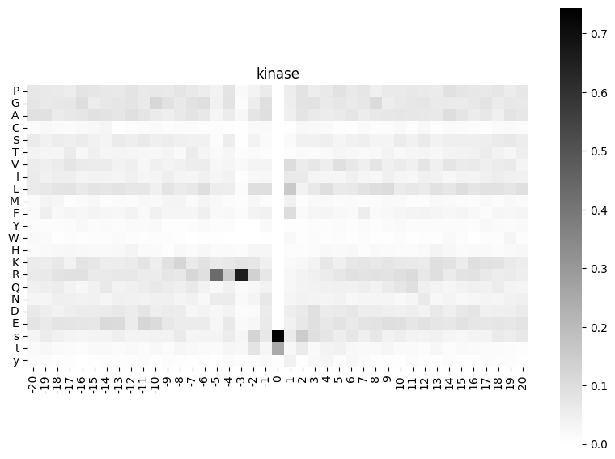
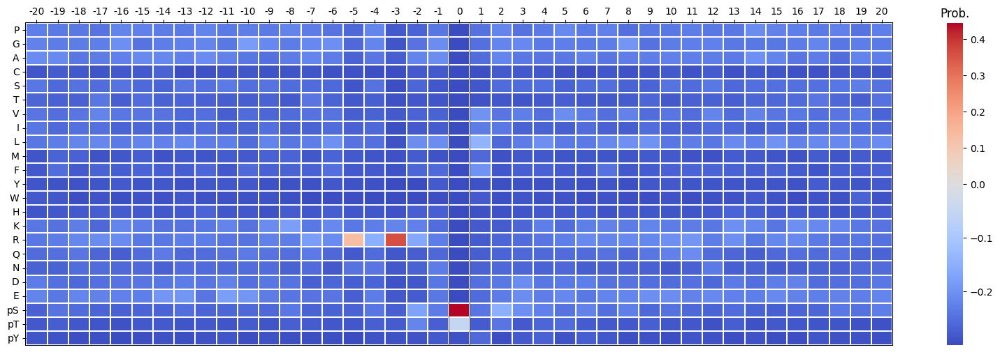
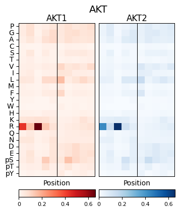
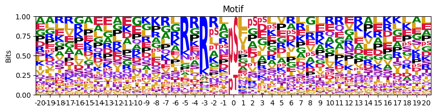
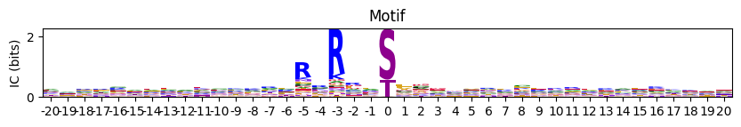
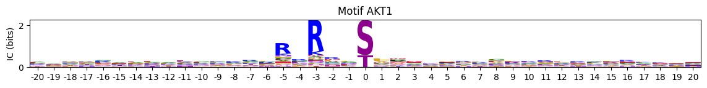
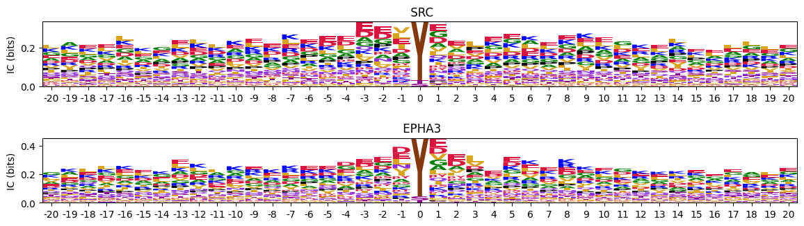
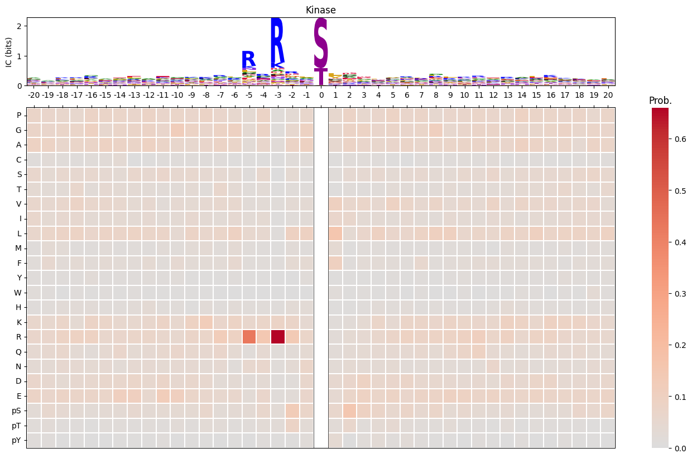

# Load data for testing
from katlas.data import *
from katlas.utils import *
from katlas.pssm.core import *pssm.plot
plot functions of probability pssm
Overview
String Conversion Utilities
To convert between lowercase phosphorylation notation (s/t/y) and formal notation (pS/pT/pY):
pSTY2sty(string='pS-peptide-pT') # converts pS/pT/pY → s/t/y
sty2pSTY(string='s-peptide-t') # converts s/t/y → pS/pT/pY
sty2pSTY_df(df=pssm_df) # applies sty→pSTY to dataframe indexSimple Heatmaps
To plot a basic black-and-white heatmap of PSSM values:
plot_heatmap_simple(
matrix=pssm_df, # a matrix of values (positions × amino acids)
title='kinase', # title displayed above heatmap
figsize=(10, 7), # (width, height) of figure
cmap='binary', # colormap, default is black & white
)Formal Heatmaps
To plot a publication-ready heatmap with diverging colors centered at zero:
plot_heatmap(
heatmap_df=pssm_df, # PSSM dataframe (positions × amino acids)
ax=None, # optional matplotlib axes
position_label=True, # show position numbers on x-axis
figsize=(20, 6), # (width, height) of figure
include_zero=True, # whether to show position 0
scale_pos_neg=False, # use TwoSlopeNorm for balanced pos/neg scaling
colorbar_title='Prob.', # title for the colorbar
)Comparative Heatmaps
To plot two heatmaps side-by-side for comparing kinase motifs:
plot_two_heatmaps(
pssm1=pssm_df1, # first PSSM dataframe
pssm2=pssm_df2, # second PSSM dataframe
kinase_name='AKT', # shared title above both plots
title1='CDDM', # title for left heatmap
title2='PSPA', # title for right heatmap
figsize=(4, 4.5), # (width, height) of figure
cbar=True, # show colorbars below each heatmap
scale_01=False, # force color scale to [0, 1] range
)Logo Motifs
To plot a raw sequence logo from a PSSM:
plot_logo_raw(
pssm_df=pssm_df, # PSSM dataframe (positions × amino acids)
ax=None, # optional matplotlib axes
title='Motif', # title above the logo
ytitle='Bits', # y-axis label
figsize=(10, 2), # (width, height) of figure
)To plot an information-content-scaled logo (recommended):
plot_logo(
pssm_df=pssm_df, # frequency PSSM dataframe
title='Motif', # title above the logo
scale_zero=True, # scale position 0 to match neighbor heights
ax=None, # optional matplotlib axes
figsize=(10, 1), # (width, height) of figure
)Multiple Logos
To plot logos for specific kinases by index:
plot_logos_idx(
pssms_df=pssms, # dataframe with flattened PSSMs (kinases as rows)
'AKT1', 'AKT2', # kinase IDs to plot (as positional args)
figsize=(14, 1), # (width, height) per logo
)To plot multiple logos as subplots in one figure:
plot_logos(
pssms_df=pssms.head(2), # dataframe with flattened PSSMs
count_dict=None, # optional dict mapping idx → count for titles
path=None, # optional save path
prefix='Motif', # prefix for subplot titles
figsize=(14, 1), # (width, height) per logo
)Combined Logo + Heatmap
To plot a logo motif above its corresponding heatmap:
plot_logo_heatmap(
pssm_df=pssm_df, # PSSM dataframe (positions × amino acids)
title='Kinase', # title above the logo
figsize=(17, 10), # (width, height) of combined figure
include_zero=False, # whether to include position 0 in heatmap
)Setup
df=Data.get_cddm()
pssm_df = recover_pssm(df.loc['AKT1'])Heatmap
Black-white simple
plot_heatmap_simple
def plot_heatmap_simple(
matrix, # a matrix of values
title:str='heatmap', # title of the heatmap
figsize:tuple=(6, 7), # (width, height)
cmap:str='binary', # color map, default is dark&white
vmin:NoneType=None, vmax:NoneType=None, center:NoneType=None, robust:bool=False, annot:NoneType=None,
fmt:str='.2g', annot_kws:NoneType=None, linewidths:int=0, linecolor:str='white', cbar:bool=True,
cbar_kws:NoneType=None, cbar_ax:NoneType=None, square:bool=False, xticklabels:str='auto', yticklabels:str='auto',
mask:NoneType=None, ax:NoneType=None
):
Plot heatmap based on a matrix of values
plot_heatmap_simple(pssm_df,'kinase',figsize=(10,7))
Formal
It will convert s,t,y to pS,pT,pY in the heatmap.
pSTY2sty
def pSTY2sty(
string
):
Convert pS/pT/pY to s/t/y in a string.
sty2pSTY
def sty2pSTY(
string
):
Convert s/t/y to pS/pT/pY in a string.
sty2pSTY_df
def sty2pSTY_df(
df
):
Applies sty→pSTY to dataframe index
plot_heatmap
def plot_heatmap(
heatmap_df, ax:NoneType=None, position_label:bool=True, figsize:tuple=(5, 6), include_zero:bool=True,
scale_pos_neg:bool=False, colorbar_title:str='Prob.', vmin:NoneType=None, vmax:NoneType=None, cmap:NoneType=None,
center:NoneType=None, robust:bool=False, annot:NoneType=None, fmt:str='.2g', annot_kws:NoneType=None,
linewidths:int=0, linecolor:str='white', cbar:bool=True, cbar_kws:NoneType=None, cbar_ax:NoneType=None,
square:bool=False, xticklabels:str='auto', yticklabels:str='auto', mask:NoneType=None
):
Plot a heatmap of pssm.
This function visualizes a PSSM or log-odds matrix as a heatmap with diverging color scales centered at 0.
Color scale behavior:
By default (
scale_pos_neg=False), the colormap is centered at 0, but the full data range determines the color intensity:\[ \text{color range} = [\min(\text{data}), \max(\text{data})], \quad \text{with center at } 0 \]
This is useful when you want to emphasize whether values are above or below zero, but without enforcing symmetry.
If
scale_pos_neg=True, the function uses a balanced diverging scale viaTwoSlopeNorm, such that:\[ \text{min color} = \min(\text{data}), \quad \text{center} = 0, \quad \text{max color} = \max(\text{data}) \]
The positive and negative ranges are scaled separately, ensuring that both ends of the heatmap have equal visual weight — especially helpful for symmetric data like log-odds matrices.
Additional visual features: - The center position (\(i = 0\)) can be masked out using include_zero=False.
plot_heatmap(pssm_df-0.3,scale_pos_neg=False,figsize=(20, 6));
plot_heatmap(pssm_df-0.3,scale_pos_neg=True,figsize=(20, 6));
plt.close('all')Two heatmaps comparison
plot_two_heatmaps
def plot_two_heatmaps(
pssm1, pssm2, kinase_name:str='Kinase', title1:str='CDDM', title2:str='PSPA', figsize:tuple=(4, 4.5),
cbar:bool=True, scale_01:bool=False, cbar_fontsize:int=10, kwargs:VAR_KEYWORD
):
Plot two side-by-side heatmaps with black rectangle borders, titles on top, shared kinase label below, and only left plot showing y-axis labels.
pssm_df2 = pssm_df.loc[:,-5:5]plot_two_heatmaps(pssm_df2,pssm_df2,'AKT','AKT1','AKT2')
Logo motif
To distinguish sty from STY, sty (lowercase) in the input df are automatically converted to pS,pT,pY in logo motif.
plot_logo_raw
def plot_logo_raw(
pssm_df, ax:NoneType=None, title:str='Motif', ytitle:str='Bits', figsize:tuple=(10, 2)
):
Plot logo motif using Logomaker.
plot_logo_raw(pssm_df)
We can find the center name is in lower case, so need to change them
change_center_name
def change_center_name(
df
):
Transfer the middle s,t,y to S,T,Y for plot if s,t,y have values; otherwise keep the original.
Now instead of s,t,y, the center name becomes S, T and Y:
change_center_name(pssm_df)[0]aa
P 0.000000
G 0.000000
A 0.000000
C 0.000000
S 0.744152
T 0.248538
V 0.000000
I 0.000000
L 0.000000
M 0.000000
F 0.000000
Y 0.007310
W 0.000000
H 0.000000
K 0.000000
R 0.000000
Q 0.000000
N 0.000000
D 0.000000
E 0.000000
s 0.000000
t 0.000000
y 0.000000
Name: 0, dtype: float64get_pos_min_max
def get_pos_min_max(
pssm_df
):
Get min and max value of sum of positive and negative values across each position.
scale_zero_position
def scale_zero_position(
pssm_df
):
Scale position 0 so that: - Positive values match the max positive column sum of other positions - Negative values match the min (most negative) column sum of other positions
This function rescales position 0 in a log-odds PSSM so that its total positive and negative stack heights match those of the most extreme positions on either side.
This ensures the central position visually matches the dynamic range of surrounding positions in log-odds logo plots.
scale_pos_neg_values
def scale_pos_neg_values(
pssm_df
):
Globally scale all positive values by max positive column sum, and negative values by min negative column sum (preserving sign).
convert_logo_df
def convert_logo_df(
pssm_df, scale_zero:bool=True, scale_pos_neg:bool=False
):
Change center name from s,t,y to S, T, Y in a pssm and scaled zero position to the max of neigbors.
get_logo_IC
def get_logo_IC(
pssm_df
):
For plotting purpose, calculate the scaled information content (bits) from a frequency matrix, using log2(3) for the middle position and log2(len(pssm_df)) for others.
To visualize the motif using Logomaker, the scaled PSSM is computed by weighting each amino acid’s frequency at position \(i\) by the position’s information content:
\[ \text{PSSM\_scaled}_i(x) = P_i(x) \cdot \mathrm{IC}_i \]
This results in a matrix where the total stack height at each position equals the information content, and each letter’s height is proportional to its contribution. This is the standard format used by Logomaker to generate sequence logos.
get_logo_IC(pssm_df)| Position | -20 | -19 | -18 | -17 | -16 | -15 | -14 | -13 | -12 | -11 | ... | 11 | 12 | 13 | 14 | 15 | 16 | 17 | 18 | 19 | 20 |
|---|---|---|---|---|---|---|---|---|---|---|---|---|---|---|---|---|---|---|---|---|---|
| aa | |||||||||||||||||||||
| P | 0.019253 | 0.011378 | 0.016632 | 0.014723 | 0.027341 | 0.017469 | 0.018061 | 0.020054 | 0.018999 | 0.021432 | ... | 0.022264 | 0.016570 | 0.017585 | 0.025658 | 0.024024 | 0.024794 | 0.016453 | 0.018620 | 0.011564 | 0.017775 |
| G | 0.020457 | 0.011642 | 0.018254 | 0.019222 | 0.033016 | 0.012927 | 0.018462 | 0.023318 | 0.019358 | 0.020458 | ... | 0.023748 | 0.019803 | 0.018025 | 0.017396 | 0.018739 | 0.023716 | 0.020762 | 0.014741 | 0.014455 | 0.016590 |
| A | 0.023666 | 0.015347 | 0.015820 | 0.018404 | 0.025278 | 0.020613 | 0.022074 | 0.022852 | 0.021867 | 0.025329 | ... | 0.023748 | 0.018186 | 0.018904 | 0.027833 | 0.024505 | 0.019943 | 0.017237 | 0.011637 | 0.016383 | 0.018170 |
| C | 0.003209 | 0.003704 | 0.004462 | 0.003272 | 0.006191 | 0.004891 | 0.008428 | 0.000933 | 0.002151 | 0.003897 | ... | 0.003463 | 0.005658 | 0.002198 | 0.004349 | 0.003844 | 0.003234 | 0.001959 | 0.003879 | 0.003212 | 0.003160 |
| S | 0.016044 | 0.007144 | 0.014198 | 0.012678 | 0.019087 | 0.009782 | 0.008830 | 0.018188 | 0.012188 | 0.020945 | ... | 0.013853 | 0.016570 | 0.011431 | 0.013916 | 0.015376 | 0.017248 | 0.012928 | 0.014741 | 0.014134 | 0.013430 |
| T | 0.009627 | 0.005292 | 0.007707 | 0.016359 | 0.008254 | 0.010830 | 0.008428 | 0.010726 | 0.007170 | 0.008281 | ... | 0.009400 | 0.008083 | 0.007474 | 0.010437 | 0.012012 | 0.015092 | 0.014495 | 0.009698 | 0.005782 | 0.013035 |
| V | 0.015242 | 0.008467 | 0.015415 | 0.021267 | 0.020635 | 0.013276 | 0.014850 | 0.012592 | 0.011471 | 0.007793 | ... | 0.014843 | 0.020611 | 0.013189 | 0.021744 | 0.018258 | 0.022099 | 0.012536 | 0.014353 | 0.013170 | 0.008690 |
| I | 0.015643 | 0.007144 | 0.013792 | 0.013496 | 0.011865 | 0.008734 | 0.010034 | 0.010260 | 0.011113 | 0.009742 | ... | 0.009400 | 0.011720 | 0.011431 | 0.006958 | 0.011532 | 0.011858 | 0.011752 | 0.013189 | 0.009637 | 0.010665 |
| L | 0.016044 | 0.012171 | 0.021905 | 0.022494 | 0.022183 | 0.018517 | 0.020067 | 0.026116 | 0.016848 | 0.023867 | ... | 0.022759 | 0.016166 | 0.025059 | 0.020875 | 0.030751 | 0.026950 | 0.021546 | 0.021335 | 0.015098 | 0.022910 |
| M | 0.003209 | 0.006086 | 0.007707 | 0.002863 | 0.005159 | 0.005590 | 0.002809 | 0.005130 | 0.003226 | 0.007306 | ... | 0.003463 | 0.002425 | 0.006155 | 0.005654 | 0.004324 | 0.003773 | 0.005876 | 0.003491 | 0.004818 | 0.004345 |
| F | 0.004412 | 0.008202 | 0.005679 | 0.008589 | 0.008254 | 0.007686 | 0.007224 | 0.007462 | 0.008962 | 0.005845 | ... | 0.010885 | 0.009295 | 0.008793 | 0.007393 | 0.009610 | 0.007546 | 0.003526 | 0.006594 | 0.005140 | 0.007505 |
| Y | 0.003209 | 0.001852 | 0.002840 | 0.003272 | 0.007222 | 0.002795 | 0.004013 | 0.003265 | 0.003943 | 0.004871 | ... | 0.004453 | 0.003637 | 0.003517 | 0.003479 | 0.003844 | 0.003773 | 0.005484 | 0.004267 | 0.002570 | 0.005135 |
| W | 0.004813 | 0.002646 | 0.001217 | 0.002863 | 0.002064 | 0.002446 | 0.002408 | 0.004664 | 0.002151 | 0.002435 | ... | 0.001484 | 0.002021 | 0.002198 | 0.005219 | 0.003363 | 0.000539 | 0.002742 | 0.002327 | 0.006425 | 0.002765 |
| H | 0.003610 | 0.003175 | 0.005679 | 0.006544 | 0.007738 | 0.004542 | 0.004816 | 0.006529 | 0.008245 | 0.005358 | ... | 0.003958 | 0.005254 | 0.009672 | 0.006958 | 0.005285 | 0.007007 | 0.004701 | 0.003491 | 0.004176 | 0.006320 |
| K | 0.015643 | 0.009261 | 0.018660 | 0.010633 | 0.027857 | 0.016420 | 0.014449 | 0.017255 | 0.014339 | 0.025816 | ... | 0.021769 | 0.015762 | 0.027257 | 0.024354 | 0.017778 | 0.033418 | 0.021546 | 0.020947 | 0.012849 | 0.013825 |
| R | 0.016446 | 0.011642 | 0.022311 | 0.024539 | 0.030953 | 0.014324 | 0.016857 | 0.021453 | 0.016490 | 0.018996 | ... | 0.035127 | 0.018186 | 0.027257 | 0.016961 | 0.025946 | 0.030184 | 0.016453 | 0.013577 | 0.012207 | 0.013035 |
| Q | 0.012033 | 0.008996 | 0.015415 | 0.009815 | 0.008770 | 0.010132 | 0.017258 | 0.012592 | 0.010754 | 0.018022 | ... | 0.029685 | 0.011720 | 0.010551 | 0.007828 | 0.012493 | 0.016709 | 0.010969 | 0.013965 | 0.007709 | 0.008295 |
| N | 0.008423 | 0.005557 | 0.012575 | 0.012269 | 0.013929 | 0.009782 | 0.008027 | 0.013991 | 0.010396 | 0.013151 | ... | 0.009895 | 0.016974 | 0.007474 | 0.009133 | 0.006727 | 0.009702 | 0.008227 | 0.007370 | 0.008673 | 0.011060 |
| D | 0.017649 | 0.008996 | 0.010547 | 0.013496 | 0.019087 | 0.013276 | 0.016054 | 0.020986 | 0.013622 | 0.025329 | ... | 0.016327 | 0.010508 | 0.018465 | 0.013916 | 0.021622 | 0.026950 | 0.011361 | 0.012025 | 0.009958 | 0.015405 |
| E | 0.020858 | 0.010848 | 0.021905 | 0.020858 | 0.025794 | 0.016770 | 0.028897 | 0.033578 | 0.013622 | 0.039941 | ... | 0.024738 | 0.023036 | 0.021103 | 0.020440 | 0.026907 | 0.026411 | 0.018020 | 0.019395 | 0.014776 | 0.020145 |
| s | 0.008022 | 0.009790 | 0.011764 | 0.009407 | 0.010318 | 0.008036 | 0.009231 | 0.014924 | 0.008245 | 0.012177 | ... | 0.012864 | 0.009295 | 0.012310 | 0.008698 | 0.008168 | 0.011858 | 0.009010 | 0.015904 | 0.010922 | 0.017380 |
| t | 0.004412 | 0.004234 | 0.004057 | 0.003681 | 0.003095 | 0.004192 | 0.005218 | 0.003731 | 0.004302 | 0.003897 | ... | 0.004948 | 0.002425 | 0.007034 | 0.002609 | 0.005766 | 0.005390 | 0.003526 | 0.003491 | 0.001927 | 0.001975 |
| y | 0.003209 | 0.001852 | 0.000811 | 0.001636 | 0.000000 | 0.000699 | 0.002007 | 0.001865 | 0.001792 | 0.003897 | ... | 0.004453 | 0.002021 | 0.001319 | 0.003044 | 0.001441 | 0.001617 | 0.003134 | 0.002327 | 0.001927 | 0.001185 |
23 rows × 41 columns
plot_logo
def plot_logo(
pssm_df, title:str='Motif', scale_zero:bool=True, ax:NoneType=None, figsize:tuple=(10, 1)
):
Plot logo of information content given a frequency PSSM.
# plot_logo(pssm_df,scale_zero=False,figsize=(10,1))Set scale_zero to default True can have better vision of the side amino acids
plot_logo(pssm_df,title='Motif',figsize=(10,1))
plt.close('all')Multiple logos
As multiple figures:
plot_logos_idx
def plot_logos_idx(
pssms_df, idxs:VAR_POSITIONAL, figsize:tuple=(14, 1)
):
Plot logos of a dataframe with flattened PSSMs with index ad IDs.
pssms=Data.get_cddm()plot_logos_idx(pssms,'AKT1','AKT2')

In one figure:
plot_logos
def plot_logos(
pssms_df, count_dict:NoneType=None, # used to display n in motif title
prefix:str='Motif', figsize:tuple=(14, 1)
):
Plot all logos from a dataframe of flattened PSSMs as subplots in a single figure.
plot_logos(pssms.head(2),prefix=None)
plt.close('all')Logo motif + Heatmap
plot_logo_heatmap
def plot_logo_heatmap(
pssm_df, # column is position, index is aa
title:str='Motif', figsize:tuple=(17, 10), include_zero:bool=False
):
Plot logo and heatmap vertically
plot_logo_heatmap(pssm_df,title='Kinase',figsize=(17,10))